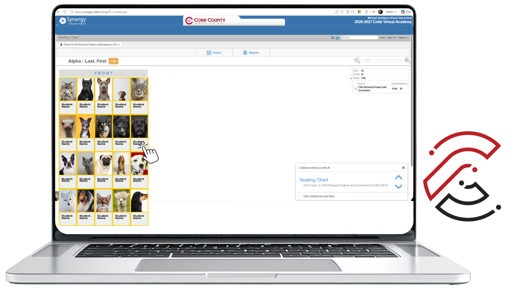
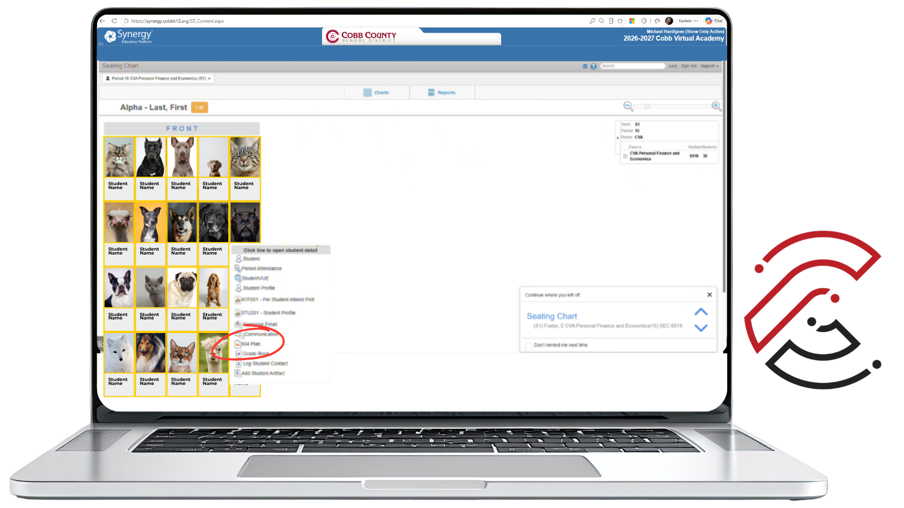
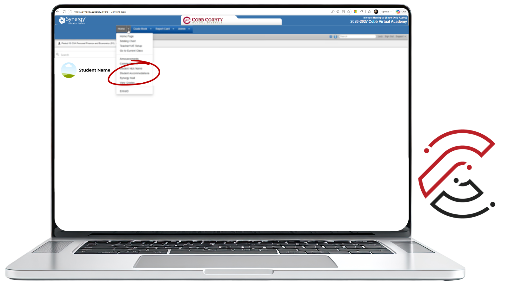
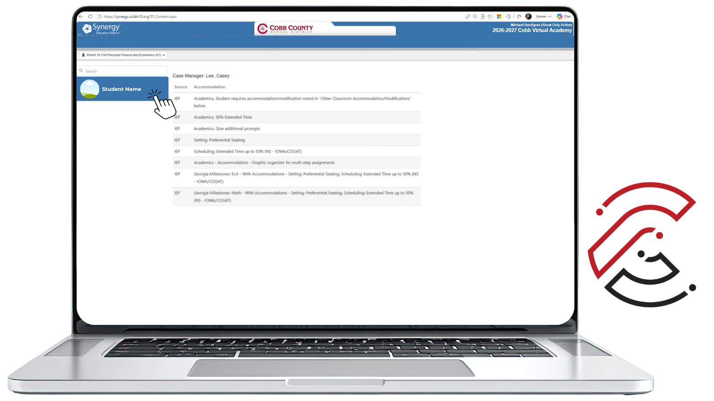
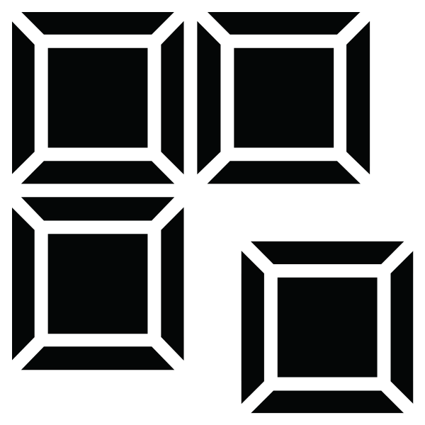

Student Accommodations in a CVA Class
Some students in your CVA class may have approved accommodations through an IEP or 504 Plan. As a CVA Teacher, your role is to review, understand, and implement the approved accommodations.
Know Where to Look and Who to Contact
Accommodations help ensure students have access to the supports they are approved to receive. In CVA, you may learn about a student’s accommodations in more than one way, and CVA Teacher Support will help coordinate information when needed.
Important: Accommodations in CVA may look different from a face-to-face classroom. Review the details provided and reach out to CVA Teacher Support with questions or concerns.
How You May Learn a Student Has IEP or 504 Plan Accommodations
There are primarily two ways you may become aware that a student has approved accommodations.
Synergy
You can access student information in Synergy to review details connected to the student’s plan. If a student self-reports accommodations through Flex Ed or by contacting you directly, always verify that information is accurate by checking Student Accommodations in Synergy.
CVA Student Support
CVA Student Support will provide additional details as needed to support the implementation of accommodations.
Your Role as a CVA Teacher
Once you are aware of a student’s approved accommodations, use the guidance provided to support the student appropriately in the CVA learning environment.
Review and Implement Approved Accommodations
Review the accommodation information provided and implement the approved accommodations. Remember that CVA accommodations may be different from accommodations used in a face-to-face classroom.
Case Managers and Outside Agencies
If a case manager, counselor, or outside agency contacts you requesting student information, progress updates, or documentation, DO NOT provide the information directly. Instead, direct the request to CVA Student Support so the appropriate staff can assist and notify CVA Teacher Support.
Suggested Response
Thank you for reaching out. Requests for student information from counselors, case managers, or outside agencies should be directed to CVA Student Support. You can reach them by emailing cvastudentsupport@cobbk12.org or calling 678.581.6791. Thank you for your understanding.
Ask Questions Early
Send questions or concerns to CVA Teacher Support and theycan help coordinate next steps.
Viewing 504 Plans
All teachers have access to their respective students’ 504 Plans of Accommodations via Synergy Gradebook.
Synergy Seating Chart
Once signed in to your Synergy Seating Chart, reference the email sent to you separately (each term) about which students are currently served through a 504 plan.

Click image to enlargeFinding the 504 Plan
Once you have identified a specific student with a 504 plan, click on that student’s picture and select 504 Plan from the the pop-up menu. The student’s most recent, latest finalized 504 Plan of Accommodations will then open up as a PDF.

Click image to enlargeAccommodation Types
Scroll down to the Accommodations Types section to view that student’s specific accommodations.
Viewing IEP Plans
Synergy Gradebook gives teachers immediate access to all of the accommodations for any student in their courses who is served through Special Education.
Finding the Students
Once signed in to your Synergy Gradebook, hover your cursor over the Home tab at the top.
Student Accommodations
From the menu that drops down, select Student Accommodations. All students who are served through Special Education will appear in a list on the left-hand side of the screen.

Click image to enlargeViewing the accommodations
To access each student’s specific accommodations, simply click on a student’s picture and the list of accommodations from that student’s last finalized IEP will appear.

Click image to enlargeUniversal Accommodations in Online Learning
Students with an IEP or 504 Plan can still receive accommodations and support in CVA courses. Because learning looks a little different in an online environment, not every accommodation may apply in the same way it does face-to-face. Our goal is to provide the supports that can be reasonably implemented in the virtual setting so students can succeed in their online classroom.
Agenda Click to learn more
The class schedule is located in Course Information and includes all due dates for the term. Encourage students to print or regularly reference the schedule to help them track due dates, completed coursework, and grades.
Extended Time: Tests Click to learn more
A timer may appear during quizzes and tests, but it does not automatically end the assessment when time expires. The timer allows teachers to monitor how long a student spends on the assessment. Students who receive extended time may simply continue working beyond the displayed time as needed.
Extended Time: Assignments & Projects Click to learn more
Students have 24/7 access to course instruction, assignments, and assessments once enrolled in CVA. Because all due dates are provided on the Class Schedule at the beginning of the term, students can plan ahead and begin assignments early when additional time is needed. Students whose health needs periodically affect their ability to complete coursework may also work ahead when they are able. After an assignment's due date passes, teachers will mark the item Missing, and a temporary score of 0% will appear in the gradebook. Once the student submits the assignment and it is graded, replace the 0% with the score earned. There is no academic penalty for submitting work after an individual assignment due date. However, the midterm and final submission deadlines are firm. These deadlines are listed on the Class Schedule, and all required coursework must be submitted by the applicable deadline.
Copies of Notes & Study Guides Click to learn more
Course materials may be printed out and reviewed or highlighted as needed.
Monitoring of Student Progress Click to learn more
Students and families have access to the student's grades in StudentVue and ParentVue and are encouraged to check progress frequently against course schedule due dates.
Use of Computer Click to learn more
A computer is required to participate in the online course. Students use a computer to access course content, complete assignments and assessments, and submit their work directly through the course.
Small Group & Preferential Seating Click to learn more
All students work individually on a computer.
Marking on Tests Click to learn more
All assessment answers are entered online.
Student Support Click to learn more
The Virtual and Face-to-Face CVA Learning Centers are available for additional student support. Hours are posted on the CVA website.
Reduction in Math Problems Click to learn more
All practice assignments and mastery quizzes have only 10 items; practice assignment items are scaffolded to ensure mastery of concepts.

Chunking
Click to learn more
Students should contact their teacher(s) with specific questions and can move to the next lesson while waiting for a response. Teachers will reply within 24 hours.
Proctoring Click to learn more
Any adult can read a test aloud for a student.
Built-In Supports in CTLS Student
Students can locate Accessibility Tools in the top-right corner of CTLS Student. These tools can support reading, viewing, listening, and reviewing course content.
Teacher Tip: These tools may support all students, not only students with formal accommodations. Encourage students to use the tools that help them access and understand course content.
 Line Reader
Click to learn more
Line Reader
Click to learn more
Helps students focus on one line of text at a time by blocking out the rest of the screen. Best for when text feels overwhelming or hard to follow.
 Color Contrast
Click to learn more
Color Contrast
Click to learn more
Lets students change how text and background colors appear. Best for when text is difficult to see or causes eye fatigue.
 Read Aloud
Click to learn more
Read Aloud
Click to learn more
Reads text aloud while students follow along. Best for when students need help understanding complex text or prefer listening.
 Captions
Click to learn more
Captions
Click to learn more
Displays spoken words as text during a video. Best for when audio is unclear or students want to read and listen at the same time.
 Transcripts
Click to learn more
Transcripts
Click to learn more
Provides a full written version of everything said in a video. Best for studying, reviewing, or looking for specific information.
 Audio Descriptions
Click to learn more
Audio Descriptions
Click to learn more
Audio descriptions provide spoken explanations of important visual details in a video, including actions, expressions, settings, and on-screen text not covered by dialogue.
Meeting Attendance and Representation
May Be Invited
CVA Teachers may be invited to IEP or 504 meetings, but they are not required to attend.
What Should I Do?
If a student self-reports...
Review available information in Synergy and contact CVA Teacher Support if you need clarification.
If you need to review...
Review the approved accommodations and implement them in your CVA class. You can find the information you need in Synergy.
If a CCSD Case Manager requests updates...
It is appropriate to respond directly to the CCSD Case Manager. Do not, however, provide any student information to any other agency. If you have questions about responding to Case Managers and writing about a student's functioning, reach out to CVA Teacher Support.
When in Doubt, Contact CVA Teacher Support
Do not guess about how to interpret or implement accommodations. If you have questions, concerns, or need clarification, contact cvateachersupport@cobbk12.org.